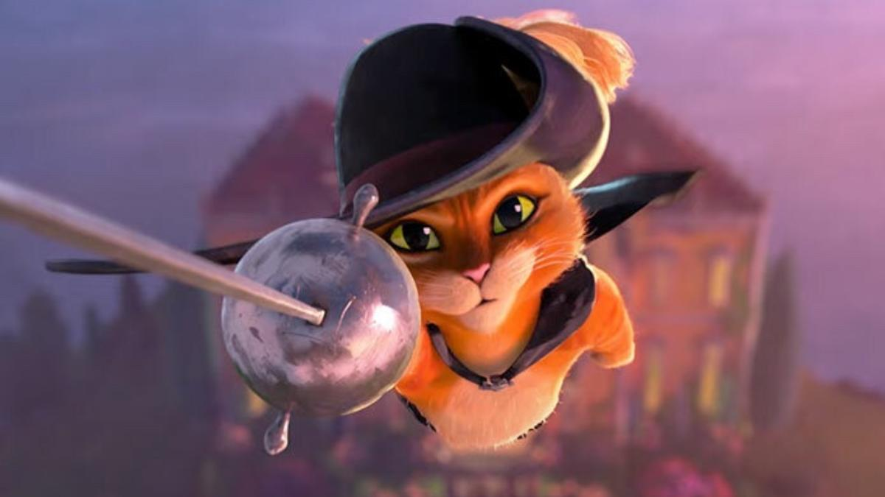

Actualmente estoy interesado en expandir mis conocimientos sobre la programación, aunque a veces no entiendo todo, con repaso logro entenderle.
También estoy interesado en mejorar en mis pasatiempos como los videojuegos y el basketball.
Mis peliculas favoritas
Mis comidas favoritas


| Personaje | Foto | ¿Por qué? |
|---|---|---|
| Rayo McQueen |

|
Porque me gusta el desarrollo que tiene en la pelicula, enseñandonos que hay que ser humildes. |
Gato con Botas |  |
Porque nos enseña que hay que dejar a lado nuestro ego y que es mejor pensar en nosotros y en los demás. |